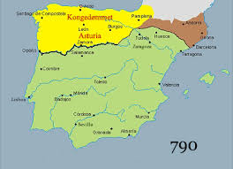

Sephardic Jews migrated to Latin America and the United States for various reasons, including religious persecution like the reconquista, the reconquista happened becuase after 700 years of muslim rule in spain the spanish people had enough and decided to rebel. This in turn made the conquista and during this and after they said everyone that is not christian/catholic for being a bad person.Another reason is for economic opportunities
In Latin America, cities such as Monterrey, Mexico, and São Paulo, Brazil,And Mexico city. In fact mexico's most popular cantidate for presidentcy is Claudia Sheinbaum Pardo and she is Half Jewish!

My family in specific is from Andalusia spain which is the most southern state in spain right by morocco. the reason we are here in the united states now is becuase of his family. his family came to mexico and western united states to explore and be a apart of history.